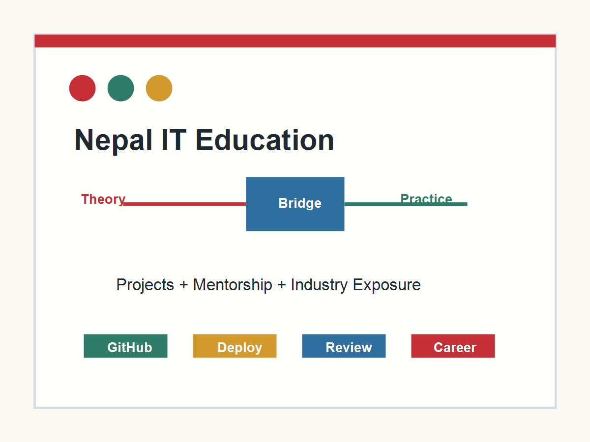

Outdated practical work
Assignments can stay limited to syntax examples instead of full applications, APIs, databases, testing, and deployment.
Bachelor Level IT in Nepal
Many bachelor IT students in Nepal study theory, pass exams, and still feel unprepared for actual software work. The problem is not student talent. The gap is in practice, mentorship, updated curriculum, and exposure to real projects.

Main Point
A strong IT program should help students write code, debug systems, read documentation, build deployable projects, work in teams, communicate decisions, and understand security, data, and product thinking. When these skills are weak, graduates need months of self-study before they can contribute confidently.
Observed Gaps
Assignments can stay limited to syntax examples instead of full applications, APIs, databases, testing, and deployment.
Students need feedback on structure, readability, debugging, version control, and how to improve a working solution.
College learning becomes stronger when local companies, alumni, and mentors share current tools and work expectations.
Modern IT work depends on documentation, error logs, GitHub issues, and technical writing. These should be practiced early.
Roadmap
Daily coding, Git basics, problem solving, documentation reading, and small console projects.
Web interfaces, databases, APIs, unit testing, and teamwork with code reviews.
Internship preparation, cloud deployment, security basics, agile practice, and portfolio projects.
Capstone products, open-source contribution, interview practice, and public project demos.
Student Action
0 of 5 actions selected.